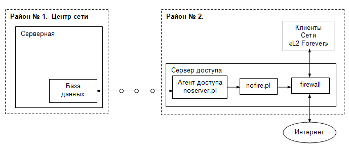

| Биллинговая система NoDeny. Агенты NoDeny |
Понятие сателлит
В то время как ядро NoDeny обрабатывает информацию, необходимо параллельно обеспечить авторизацию клиентов и управление доступом в интернет (ресурсам и т.д).
Этим занимаются агенты - скрипты, которые запускаются на сервере, обслуживающем определенную категорию клиентов, обычно по географическому признаку. Вероятно, ваша сеть начиналась с простейшего решения: один маршрутизатор, по одну сторону локальная сеть, по другую - провайдер. Все управление (нат, шейпы и т.д) осуществлялось на этом единственном сервере. По мере роста, появилась необходимость расширения парка маршрутизаторов, например, по географическому признаку - один обслуживает район А, другой - Б. Сервер, на котором запускается хотя бы один агент называем сателлитом.
Для каждого сателлита в базе данных NoDeny формируется своя конфигурация, которую агенты загружают при старте. Интересной особенностью сателлита является то, что имеется возможность дать доступ скриптам-агентам только к определенной группе (группам) клиентов. Это призвано повысить безопасность на случай если будет взломан один из сателлитов. Таким образом не произойдет полной утечки информации.
Агент авторизации гарантирует, что клиенты, претендующие на получение услуг в данный момент времени, являются легальными абонентами, т.е. исключает махинации с подменой данных.
Агент доступа noserver.pl предназначен для управления трафиком клиентов на основе требуемых критериев: авторизации, пакета тарификации, времени суток и т.д.
Агенты, как и все остальные узлы системы, взаимодействуют с ядром через базу данных, работают независимо (вообще, необязателен запуск любого из них), но используют общий конфиг sat.cfg, в котором прописаны параметры соединения с основной базой данных. После соединения из базы запрашивается персональный конфиг для требуемого агента.
Параметры соединения с БД.
В распределенной системе, состоящей из нескольких разбросанных серверов авторизации и управления, в каждой точке запускается своя копия скрипта(ов). Каждый сателлит соединяется с БД по уникальному логину со своими правами. Уникальность логина рекомендуется автором. Например, автор для своих серверов назначает логины для коннекта к БД в виде bill_название_сервера, например bill_stone либо bill_linkom_gate1 (логин для сервера gate1 сети linkom).
Создав в основной базе данных и базе авторизаций логин для нужного сервера, необходимо дать права на доступ только к необходимым таблицам, не больше, не меньше. Это требование очень важно т.к. базируется на давно известном факте, что любая система может быть взломана. Особенно это актуально в разбросанных по масштабной сети серверах, которыми управляют разные администраторы с разными способностями и лояльностью. Таким образом, потеря контроля над одним сервером не должна быть причиной утечки ВСЕЙ информации, в худшем случае только ее части, которую обслуживает данный сервер.
Последнее требование может быть выполнено только при условии ограниченного доступа логина к таблицам БД. У логина определенного сателлита должны быть следующие привилегии в БД bill:
INSERT в таблицу dblogin
INSERT в таблицу sat_log
SELECT таблицы conf_sat
SELECT таблицы dopdata
SELECT таблицы nets
SELECT таблицы files
SELECT таблицы plans2
SELECT таблицы users_trf
SELECT таблицы со списком абонентов
- В dblogin агент авторизации записывает авторизации клиентов, которые потом обрабатываются ядром NoDeny.
- Из nets берутся сети, для управления трафиком.
- В files хранятся сети, которые динамически подгружаются из файлов в биллинг.
- В plans2 хранятся данные пакетов тарификации, в частности параметры скоростей.
- users_trf периодически обновляется ядром NoDeny такими данными: общий трафик клиента (по всем его ip) с учетом перераспределения и оплачиваемых составляющих, баланс клиента с учетом текущих снятий за услуги, время посылки последнего сообщения абоненту.
- В conf_sat содержится конфигурация для агентов текущего сателлита.
- В таблицу sat_log периодически записывается состояние агента для последующего анализа в модуле мониторинга.
Представление users_linkom создается таким образом:
команда mysql
CREATE ALGORITHM = UNDEFINED VIEW users_linkom AS SELECT * FROM users WHERE grp IN (18);здесь 18 - это id группы клиентов подразделения linkom. Если сателлитом обслуживается несколько подразделений, то номера групп перечислите через запятую. Номера групп вы можете посмотреть в настройках в разделе «группы клиентов». В результате выполнения указанной команды, таблица users_linkom будет содержать в себе информацию только об абонентах в группе №18, причем эти данные не будут статическими - изменения в таблице всех клиентов (users) будут автоматически затрагивать таблицу users_linkom.
После настройки фаерволов на сервере-сателлите и на серверах баз данных (разрешение tcp соединения на порт 3306), а также конфигурационного файла sat.cfg, вы можете проверить, что не ошиблись в настройке, путем запуска скрипта noserver.pl с ненулевым параметром, например:
bash# perl nocheck.pl
В результате скрипт должен проверить возможность соединения с основной базой данных по указанному логину и возможность выборки из нужных таблиц.
Скрипт noserver.pl периодически обращается к базе данных, получает данных о тех клиентах, которым по заданным условиям необходимо разрешить доступ, после этого передает скрипту nofire.pl ip-адрес с дополнительными параметрами для более тонкого регулирования доступа.

Такими параметрами являются:
- режим авторизации клиента («вкл», «город», «выкл», «авторизован, но исчерпан лимит» и др);
- номер пакета авторизации;
- «дополнительные параметры», которые прописаны администратором в учетной записи клиента;
- скорости, указанные в пакете тарификации.
Как только noserver.pl «увидит», что один из этих параметров изменился, то поступает таким образом: сначала посылает указание nofire.pl отключить заданный ip и сразу же включить, но с новыми параметрами.
«Как только увидит» требует пояснения. Поскольку скрипт периодически соединяется с базой данных, то он «видит» обновления не чаще указанного периода. Естественно, чем меньше этот период, тем выше реакция агента на события. Уменьшение периода обновления данных клиентов уменьшает инерционность скрипта, но увеличивает нагрузку на базу данных. Необходимо выдерживать баланс т.к. очевидно, что ничего страшного не произойдет, если администратор заблокирует доступ клиенту, а доступ ему заблокируется не мгновенно, а через 5 или 10 секунд.
Итак, периодически осуществляется запрос к базе «покажи мне кто авторизован», после чего происходит сравнение данных с теми, которые были получены в предыдущий запрос к базе:
- если клиент в предыдущий запрос не был авторизован, то включаем его;
- если данные клиента предыдущего запроса отличаются от текущих - клиента выключаем и сразу включаем.
После обработки всех авторизованных, анализируются данные предыдущего среза - кто был авторизован на тот момент, но не оказался в списке текущих включенных клиентов - эти ip «выключаются».
Кроме того, периодически проверяется изменились ли тарифы т.к. их данные (скорости) также могут быть изменены. Период проверки тарифов иной. Изменение:
- состояния доступа открыт/закрыт;
- состояния авторизации (включение/переключение авторизатора);
- «дополнительных параметров» в учетной записи;
- номера пакета тарификации;
«проявится» в фаерволе максимум через количество секунд указанное как «период обновления данных клиентов». Изменение данных пакета «проявится» максимум через время равное произведению указанного периода на количество периодов для полного обновления, например 300 секунд рекомендует автор.
Последовательность действий при установке скриптов доступа и/или авторизации на сателлит:
1) Определяемся какие группы клиентов будет обслуживать текущий настраиваемый сателлит - в админке NoDeny смотрим в разделе «Операции» → «Настройка» → «Группы клиентов» номер(а) необходимых групп;
На сервере основной БД:
2) Создаем таблицу, которая будет производной от таблицы клиентов, однако будет содержать данные клиентов только выбранных групп:
команда mysql
CREATE ALGORITHM = UNDEFINED VIEW users_linkom AS SELECT * FROM users WHERE grp IN (5,6,8);
где 5,6,8 - номера групп. Группа с номером 0 означает «без группы».
3) Создаем в mysql логин для настраиваемого сервера и выдаем соответствующие права;
команды mysql
CREATE USER 'bill_stone'@'10.2.3.4' IDENTIFIED BY 'hardpass';GRANT USAGE ON *.* TO 'bill_stone'@'10.2.3.4' IDENTIFIED BY 'hardpass';
GRANT INSERT ON `bill`.`dblogin` TO 'bill_stone'@'10.2.3.4';
GRANT INSERT ON `bill`.`sat_log` TO 'bill_stone'@'10.2.3.4';
GRANT SELECT ON `bill`.`dopdata` TO 'bill_stone'@'10.2.3.4';
GRANT SELECT ON `bill`.`conf_sat` TO 'bill_stone'@'10.2.3.4';
GRANT SELECT ON `bill`.`nets` TO 'bill_stone'@'10.2.3.4';
GRANT SELECT ON `bill`.`files` TO 'bill_stone'@'10.2.3.4';
GRANT SELECT ON `bill`.`users_trf` TO 'bill_stone'@'10.2.3.4';
GRANT SELECT ON `bill`.`plans2` TO 'bill_stone'@'10.2.3.4';
GRANT SELECT ON `bill`.`users_linkom` TO 'bill_stone'@'10.2.3.4';
10.2.3.4 - ip сателлита;
bill_stone - создаваемый логин для доступа агентов в БД;
hardpass - пароль этого логина;
users_linkom - виртуальная таблица, специально созданная для группы клиентов linkom - скажем, у нас биллинг обслуживает несколько городских сетей, одна из которых имеет название linkom.
В админке NoDeny:
4) Создаем конфигурацию для текущего сателлита в разделе «Операции» → «Настройка» → «Сателлиты». Идентификатор сателлита - это логин с которым происходит соединение агентов сателлита с базами данных, в данном случае bill_stone.
На сервере-сателлите:
5) Устанавливаем клиента mysql: mysql-client-5.0
6) Устанавливаем модуль p5-DBD-mysql, который при установке из портов установит perl;
Далее, если настраиваем noserver.pl:
7) Редактируем sat.cfg и запускаем noserver.pl с командой проверки:
bash# perl nocheck.pl
8) Если скрипт не смог соединиться с БД или выполнить sql-запрос: проверяем фаервол как на текущем сервере так и на сервере основной БД, логин и пароль соединения, права доступа к соответствующим таблицам. Пробуем соединиться с сервером mysql с консоли;
9) Проверяем корректную работу noserver.pl:
в папку с этим скриптом устанавливаем тестовый nofire.pl (из папки Satellites/TEST.OK поставки) и запускаем скрипт управления доступом:
bash# perl noserver.pl
Тестовый nofire.pl не управляем фаерволом, а просто выводит сообщения на экран какой ip и с какими параметрами (режим авторизации и пакет) скрипт noserver.pl указывает включить или отключить в фаерволе.
Отключайте/включайте в админке доступ, разрешайте доступ без авторизации/с авторизацией, меняйте пакет тарификации, после чего смотрите вывод скрипта. Скрипт при стандартной настройке реагирует на изменение от 0 до 10 секунд. Т.е. вы должны убедиться, то при установке режима «клиент без авторизации» происходит включение абонента (скрипт выводит сообщение «ON: ip_клиента доп_параметры»), при изменении ключевых параметров (пакета тарификации клиента, дополнительных параметров) происходит отключение ip, затем сразу включение. Убедитесь, что скрипт реагирует на вывод клиента из обслуживаемой группы (должен отключить все включенные ip клиента), реагирует на включение/выключение доступа через админку, реагирует на изменение авторизации клиентов.
Если в обслуживаемой группе слишком много абонентов, то для исключения большого количества отладочной информации, временно создайте новую группу и переместите в нее тестируемых абонентов.
Не забывайте, что поведение скрипта описывается в конфигурации сателлита через админку, например вы можете указать, что клиенты авторизованные в режиме «сеть» не принимаются во внимание при разрешении доступа, либо же доступ будет открываться всем незаблокированным клиентам в независимости от авторизации. Все зависит от ваших требований.
10) Настраиваем фаервол.
11) Анализируем скрипт nofire.pl в стандартной поставке. Вы должны подстроить его и свой фаервол под свои требования.
12) запускаем noserver.pl в фоновом режиме:
bash# perl noserver.pl &
и проводим последнюю проверку.
13) Организуем автозагрузку агента доступа, например так:
bash# cd /usr/local/nodeny/ bash# chmod 700 go_noserver.sh bash# ee /etc/rc.local вписываем: cd /usr/local/nodeny/ nohup ./go_noserver.sh &
Если же настраиваем агента авторизации nol2auth.pl:
7) Устанавливаем модуль шифрования p5-Crypt-Rijndael;
8) Редактируем параметры соединения с БД в файле sat.cfg;
9) Запускаем агент авторизации:
команда bash
perl nol2auth.pl &